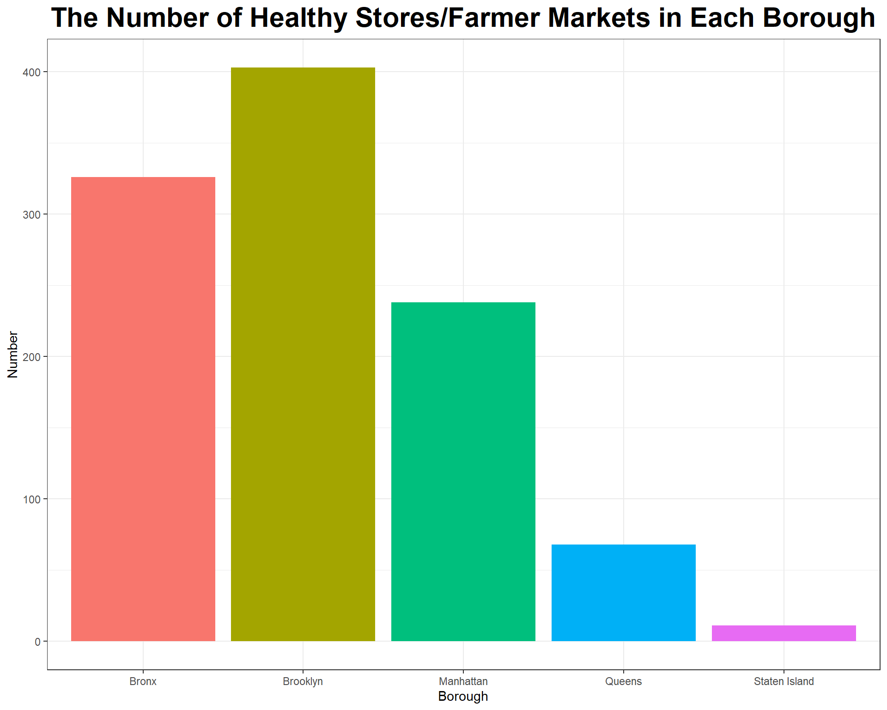
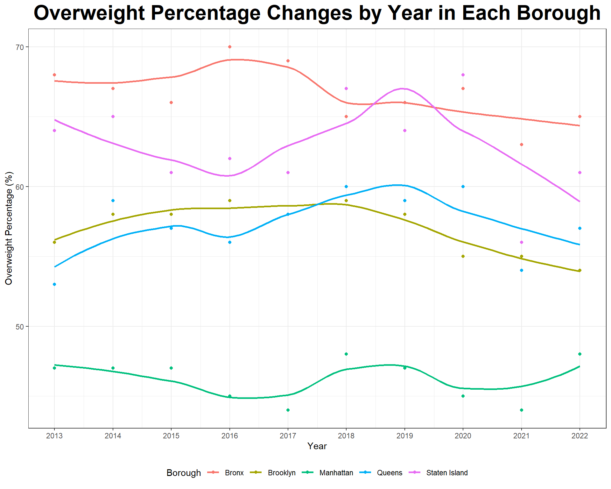
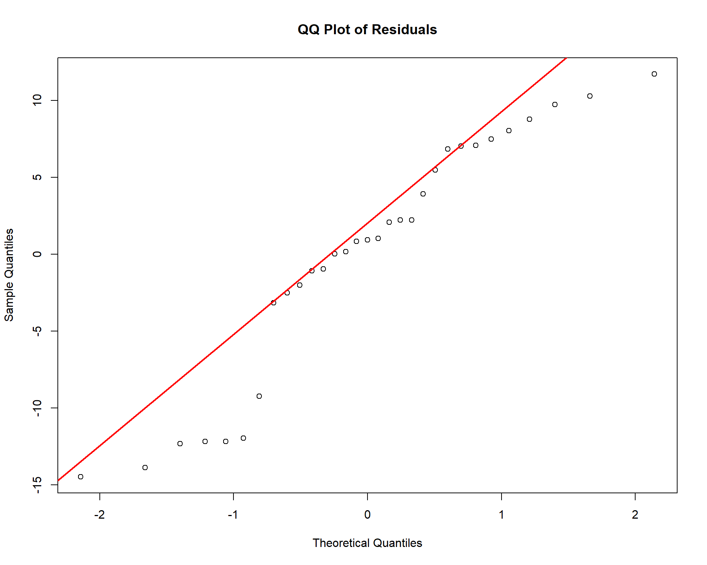

Healthy Stores/Markets & Overweight

# Import datasets for regression analysis
retail_food_stores = read.csv("./data/Retail_Food_Stores_clean.csv")
overwt = read.csv("./data/Overweight by boroughs.csv")
# average the percentage for each borough
overwt_mean = overwt |>
mutate(perc_overwt = word(Percent, 1)) |>
mutate(perc_overwt = as.numeric(perc_overwt)) |>
group_by(Geography) |>
summarize(perc = mean(perc_overwt, na.rm =TRUE))|>
rename(county = Geography)
# group numbers of stores by counties
num_stores = retail_food_stores |>
group_by(borough, zip_code)|>
count() |>
rename (store_num = n,
county = borough)
# join datasets
regression_data = left_join(overwt_mean, num_stores, by="county")
# load "stores" dataset and cleaning up:
stores = read.csv("./data/Recognized_Shop_Healthy_Stores_20241116.csv") |>
janitor::clean_names() |>
mutate(borough = case_when(
borough == "New York" ~ "Manhattan",
TRUE ~ borough
)) |>
rename(year = year_awarded, healthy_store_market = store_name) |>
distinct(latitude, longitude,.keep_all = TRUE) |>
select (healthy_store_market, borough, year)
# load "farmer markets" data and cleaning up:
farmer_market = read.csv("./data/farmers_market_data.csv") |>
janitor::clean_names() |>
distinct(latitude, longitude,.keep_all = TRUE) |>
select(farmers_market, borough, year) |>
rename(healthy_store_market = farmers_market)
# bind "stores" and "farmer_market":
stores_farmer_market = rbind(stores, farmer_market)
# clean overweight data:
overweight = overwt |>
separate (Percent, into = c("percent", "low_confidence", "highconfidence"))|>
mutate(percent = as.numeric(percent)) |>
janitor::clean_names() |>
rename (borough = geography, year = time_period, overweight_percentage = percent) |>
select(overweight_percentage, borough, year)
# calculate the number store/market in each borough in each year:
counts = stores_farmer_market |>
drop_na() |>
group_by(year, borough) |>
summarise(count = n(), .groups = "drop")
## join healthy store/market and overweight together
store_market_overweight = full_join (counts, overweight, by = join_by(year, borough)) |>
mutate(year = as.factor(year))
# write csv file for later use
write.csv(store_market_overweight, "./data/store_market_overweight.csv")Exploratory Data Analysis
Healthy Food Stores and Farmer’s Markets in Each Borough
# The Number of Healthy Stores/Farmer Markets in Each Borough
store_market_overweight |>
group_by(borough) |>
summarise(sum = sum(count, na.rm = TRUE)) |>
ggplot(aes(x = borough, y = sum, fill = borough)) +
geom_bar(stat = "identity") +
labs(
x = "Borough",
y = "Number",
title = "The Number of Healthy Stores/Farmer Markets in Each Borough") +
theme(legend.position = "none")+
theme(plot.title=element_text(size=22, face="bold")) +
theme(plot.title = element_text(hjust = 0.5))
1. Brooklyn has the highest number of healthy stores and farmer markets, followed by the Bronx and Manhattan. Queens and Staten Island have significantly fewer healthy stores and farmer markets.
2. The result is what we expected. Larger boroughs with higher population densities like Brooklyn and the Bronx are expected to have more establishments. Staten Island’s lower density explains its fewer establishments.
3. Disparity in the availability of healthy food resources is evident. Policy efforts should target underserved boroughs (e.g., Staten Island and Queens) to improve access to healthy food options.
Overweight Percentage Changes by Year in Each NYC Borough
# Overweight Percentage Changes by Year in Each Borough
store_market_overweight |>
filter(year !=2023) |>
ggplot(aes(x = as.numeric(year), y = overweight_percentage, color = borough)) +
geom_point() +
geom_smooth(method = "loess", se = FALSE) +
scale_x_continuous(
breaks = unique(as.numeric(store_market_overweight$year)), # Ensure all years are displayed
labels = unique(store_market_overweight$year) # Keep the labels as regular years
) +
labs(
x = "Year",
y = "Overweight Percentage (%)",
color = "Borough",
title = "Overweight Percentage Changes by Year in Each Borough"
) +
theme(plot.title=element_text(size=24, face="bold")) +
theme(plot.title = element_text(hjust = 0.5))
1. The Bronx and Staten Island have the highest overweight percentages, peaking around 70%. Manhattan consistently shows the lowest overweight percentages. Overweight percentages have generally declined since 2017–2018.
2. The result is what we expected. Disparities align with socioeconomic and geographic differences. Affluent areas like Manhattan are more likely to support healthier lifestyles, while areas like the Bronx face systemic challenges.
3. Declining overweight percentages may reflect the impact of health initiatives. Borough-specific interventions are necessary to address persistently high rates in the Bronx and Staten Island.
Linear Regression Models - Number of Retail Food Stores/ Healthy Food Stores vs. Percentage Overweight
Retail Food Stores (linear regression model)
# scatterplot for linear regression
regression_data |>
na.omit() |>
ggplot(aes(x = store_num, y = perc)) +
geom_point() +
geom_smooth(method = "lm", se = FALSE) + # Add a linear trend line
labs(
title = "Overweight Percentage vs. Number of Stores by Zip Codes",
x = "Number of Stores (by zip codes)",
y = "Overweight Percentage (%)") +
theme_minimal()+
theme(plot.title=element_text(size=14, face="bold")) +
theme(plot.title = element_text(hjust = 0.5))
The plot suggests a positive association between the number of retail food stores and overweight percentage.
Model Summary
# Pearson's Linear Regression
m1 = lm(perc ~ store_num, data = regression_data)
summary(m1) |>
broom::tidy()|>
mutate(term = ifelse(term == "store_num", "Slope (Number of Retail Food Stores)", term)) |>
knitr::kable(caption = "Association Between The Number of Retail Food Stores and Overweight Percentages")| term | estimate | std.error | statistic | p.value |
|---|---|---|---|---|
| (Intercept) | 53.6472336 | 0.7534963 | 71.197737 | 0.00e+00 |
| Slope (Number of Retail Food Stores) | 0.0430127 | 0.0097448 | 4.413923 | 1.72e-05 |
1. The relationship between number of retail food store and percentage of overweight is significant (p-value < 0.05) and there appears to be a weak positive association between them.
2. However, assumptions of linear regression should be checked before making any conclusion of this model.
Healthy Food Stores (linear regression model)
# Plot: Number of Healthy Stores/Farmer Markets and Overweight Percentages
store_market_overweight |>
na.omit() |>
ggplot(aes(x = overweight_percentage, y = count)) +
geom_point() +
geom_smooth(method = lm, se = FALSE) +
labs(
title = "Association Between The Number of Healthy Stores/Farmer Markets and Overweight Percentages",
x = "Overweight Percentage (%)",
y = "Number of Healthy Stores/Farmer Markets"
) +
theme_minimal()+
theme(plot.title=element_text(size=14, face="bold")) +
theme(plot.title = element_text(hjust = 0.5))
The plot suggests a negative association between the overweight percentage and the number of healthy stores or farmer markets. Regions with a higher overweight percentage tend to have fewer healthy stores or farmer markets on average.
Model Summary
model = lm(overweight_percentage ~ count, data = store_market_overweight)
summary(model) |>
broom::tidy() |>
mutate(term = ifelse(term == "count", "Slope (Number of Healthy Food Stores)", term)) |>
knitr::kable(caption = "Association Between The Number of Healthy Stores/Farmer Markets and Overweight Percentages")| term | estimate | std.error | statistic | p.value |
|---|---|---|---|---|
| (Intercept) | 60.1167336 | 2.3803062 | 25.2558827 | 0.0000000 |
| Slope (Number of Healthy Food Stores) | -0.0499049 | 0.0690072 | -0.7231828 | 0.4753605 |
1. While the coefficient for count (-0.05) suggests a slight negative relationship between the number of healthy stores/farmer markets and overweight percentages, the relationship is weak and not statistically significant.
2. The large p-value (0.475) indicates that the variability in the data may overshadow the effect of healthy store availability on overweight prevalence.
3. Other factors may play a more significant role in explaining the variation in overweight percentages.
Additional Data Analysis
Assumption Check
Normality - Retail Food Store Model
# Extract residuals
residuals = resid(m1)
# base R qqplot
qqnorm(residuals, main = "QQ Plot of Residuals")
qqline(residuals, col = "red", lwd = 2)
# Create a data frame for plotting
residual_data = data.frame(residuals = residuals)
# Checking using histogram
ggplot(residual_data, aes(x = residuals)) +
geom_histogram(binwidth = 1, fill = "lightblue", color = "black", alpha = 0.7) + # Adjust binwidth as needed
labs(
title = "Histogram of Residuals",
x = "Residuals",
y = "Frequency" ) Normality is not met: Residuals appear not to align with the reference line and doesn’t have a linear trend.
Histogram is showing residual values clustering at the 2 ends, which also indicates a violation of normality.
Homoscedasticity (equal variance) - Retail Food Store Model
# residual vs. fitted value
plot(fitted(m1), resid(m1),
main = "Residuals vs Fitted Values",
xlab = "Fitted Values",
ylab = "Residuals",
pch = 20) # Add points
abline(h = 0, col = "red", lwd = 2) # Add a reference line at zero-1.png)
# Perform the Breusch-Pagan test
bp_result = bptest(m1)
# Extract key components into a data frame
bp_table = data.frame(
Metric = c("Breusch-Pagan Statistic", "Degrees of Freedom", "P-value"),
Value = c(
round(bp_result$statistic, 3),
as.character(bp_result$parameter), # Degrees of freedom
signif(bp_result$p.value, 3)))
# Create a table using knitr::kable
knitr::kable(
bp_table,
caption = "Breusch-Pagan Test Results for Homoscedasticity",
col.names = c("Metric", "Value"))| Metric | Value |
|---|---|
| Breusch-Pagan Statistic | 2.775 |
| Degrees of Freedom | 1 |
| P-value | 0.0957 |
Homoscedasticity (equal variance) is met: p-value > 0.05 for the Breusch-Pagan test, which indicates we fail to reject the null hypothesis that there is not heteroscedasticity (non-equal variance).
Linearity - Retail Food Store Model
# Perform the RESET test
reset_result = resettest(m1)
# Extract key components into a data frame
reset_table = data.frame(
Metric = c("RESET Statistic", "Degrees of Freedom", "P-value"),
Value = c(
round(reset_result$statistic, 3),
paste0(reset_result$parameter, collapse = ", "),
signif(reset_result$p.value, 3)))
# Create a table using knitr::kable
knitr::kable(
reset_table,
caption = "RESET Test Results for Linearity",
col.names = c("Metric", "Value"))| Metric | Value |
|---|---|
| RESET Statistic | 1.398 |
| Degrees of Freedom | 2, 184 |
| P-value | 0.25 |
# p-value > 0.05, linearity assumption is not metLinearity is not met: P-value > 0.05 for RESET test.
Normality - Healthy Food Store Model
# Extract residuals
residuals = resid(model)
# base R qqplot
qqnorm(residuals, main = "QQ Plot of Residuals")
qqline(residuals, col = "red", lwd = 2)
The Normality assumption is likely met: the QQ plot shows residuals scattered reasonably around the reference line.
Homoscedasticity (equal variance) - Healthy Food Store Model
# residual vs. fitted value
plot(fitted(model), resid(model),
main = "Residuals vs Fitted Values",
xlab = "Fitted Values",
ylab = "Residuals",
pch = 20) # Add points
abline(h = 0, col = "red", lwd = 2) # Add a reference line at zero-1.png)
# Perform the Breusch-Pagan test
bp_result_1 = bptest(model)
# Extract key components into a data frame
bp_table = data.frame(
Metric = c("Breusch-Pagan Statistic", "Degrees of Freedom", "P-value"),
Value = c(
round(bp_result_1$statistic, 3),
as.character(bp_result_1$parameter), # Degrees of freedom
signif(bp_result_1$p.value, 3)))
# Create a table using knitr::kable
knitr::kable(
bp_table,
caption = "Breusch-Pagan Test Results for Homoscedasticity",
col.names = c("Metric", "Value"))| Metric | Value |
|---|---|
| Breusch-Pagan Statistic | 0.186 |
| Degrees of Freedom | 1 |
| P-value | 0.666 |
Homoscedasticity (equal variance) is met: p-value > 0.05 for the Breusch-Pagan test, which indicates we fail to reject the null hypothesis that there is not heteroscedasticity (non-equal variance).
Linearity - Healthy Food Store Model
# Perform the RESET test
reset_result_1 = resettest(model)
# Extract key components into a data frame
reset_table = data.frame(
Metric = c("RESET Statistic", "Degrees of Freedom", "P-value"),
Value = c(
round(reset_result_1$statistic, 3),
paste0(reset_result_1$parameter, collapse = ", "),
signif(reset_result_1$p.value, 3)))
# Create a table using knitr::kable
knitr::kable(
reset_table,
caption = "RESET Test Results for Linearity",
col.names = c("Metric", "Value"))| Metric | Value |
|---|---|
| RESET Statistic | 0.083 |
| Degrees of Freedom | 2, 27 |
| P-value | 0.92 |
# p-value > 0.05, linearity assumption is not metLinearity is not met: P-value > 0.05 for RESET test.
Non-parametric Test - Spearman’s Rank Test
Since some of the assumptions for Pearson’s correlation (linear regression method) are not met for both models (number of retail food store/ healthy food store vs. percentage overweight), we need to use non-parametric test, Spearman’s rank test, to test for any significance in the models
Retail Food Stores
# scatterplot for non-linear regression
regression_data |>
na.omit() |>
ggplot(aes(x = store_num, y = perc)) +
geom_point() +
geom_smooth(method = "loess", se = FALSE) + # Add a linear trend line
labs(
title = "Non-linear: Overweight Percentage vs. Number of Stores by Zip Codes",
x = "Number of Stores (by zip codes)",
y = "Overweight Percentage (%)") +
theme_minimal()+
theme(plot.title=element_text(size=14, face="bold")) +
theme(plot.title = element_text(hjust = 0.5))
spearman_result = cor.test(regression_data$store_num, regression_data$perc, method = "spearman")
# Extract key components
results = data.frame(
Statistic = c("Spearman's rho", "P-value"),
Value = c(round(spearman_result$estimate, 3), signif(spearman_result$p.value, 3)))
# Create a table
knitr::kable(
results,
caption = "Spearman's Rank Correlation Test Results (Retail Food Stores)",
col.names = c("Metric", "Value"))| Metric | Value | |
|---|---|---|
| rho | Spearman’s rho | 0.1490 |
| P-value | 0.0415 |
Spearman’s Rho: 0.1490
This value indicates a weak positive correlation between the number of general food stores and the percentage of overweight individuals. While the relationship exists, it is not particularly strong, suggesting other factors might also influence overweight percentages.
P-value: 0.0415
The p-value is less than 0.05, indicating that the correlation is statistically significant. This suggests that the observed relationship is unlikely to have occurred by chance.
Healthy Food Stores
# Plot: Number of Healthy Stores/Farmer Markets and Overweight Percentages
store_market_overweight |>
na.omit() |>
ggplot(aes(x = overweight_percentage, y = count)) +
geom_point() +
geom_smooth(method = loess, se = FALSE) +
labs(
title = "Non-linear Association Between The Number of Healthy Stores/Farmer Markets and Overweight Percentages",
x = "Overweight Percentage (%)",
y = "Number of Healthy Stores/Farmer Markets"
) +
theme_minimal()+
theme(plot.title=element_text(size=14, face="bold")) +
theme(plot.title = element_text(hjust = 0.5))
spearman_result_1 = cor.test(store_market_overweight$count, store_market_overweight$overweight_percentage, method = "spearman")
# Extract key components
results_1 = data.frame(
Statistic = c("Spearman's rho", "P-value"),
Value = c(round(spearman_result_1$estimate, 3), signif(spearman_result_1$p.value, 3)))
# Create a table
knitr::kable(
results_1,
caption = "Spearman's Rank Correlation Test Results (Healthy Food Stores)",
col.names = c("Metric", "Value"))| Metric | Value | |
|---|---|---|
| rho | Spearman’s rho | -0.106 |
| P-value | 0.569 |
Spearman’s Rho: -0.106
This indicates a weak negative correlation between the number of healthy food stores and the percentage of overweight individuals. While the relationship is weak, the negative value suggests that as the number of healthy food stores increases, the percentage of overweight individuals slightly decreases.
P-value: 0.569
The p-value is greater than 0.05, indicating that the observed correlation is not statistically significant. This means there is insufficient evidence to conclude a meaningful relationship between the number of healthy food stores and the percentage of overweight individuals.